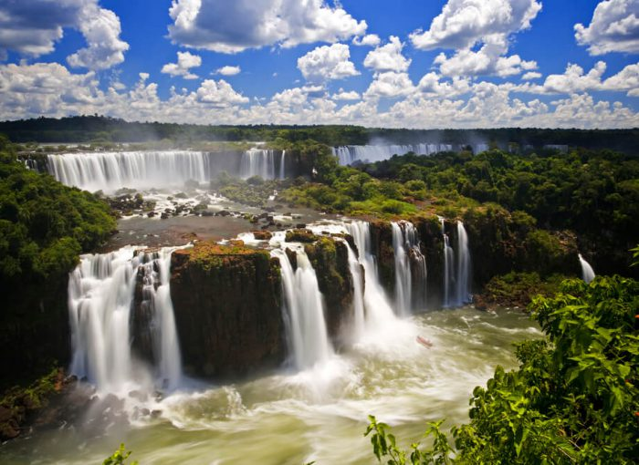
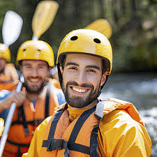

Your adventure starts here!


EcoRápidos Adventures
History
Founded in 2005 amidst the stunning landscapes of Brotas, São Paulo, EcoRápidos Adventures was born from the dream of three friends passionate about Brazil’s natural beauty and adventure sports. Inspired by the rise of eco-tourism and extreme sports, they set out to create a company that offered thrilling rafting experiences while promoting environmental conservation and community engagement. Starting with just two rafts and a modest riverside base, the company quickly gained recognition for its personalized service, experienced guides, and strong commitment to safety. By 2010, EcoRápidos Adventures had expanded its operations to include a wider variety of river tours, catering to both beginners and seasoned adventurers. Partnerships with local businesses and eco-tourism organizations helped the company establish itself as a leader in sustainable tourism, emphasizing respect for the environment and regional culture. Today, EcoRápidos Adventures is a benchmark for eco-tourism in Brazil, hosting thousands of visitors each year. The company has diversified its offerings to include canyoning, zip-lining, and corporate team-building programs, all while maintaining a strong dedication to preserving the pristine waters and wildlife of Brazil’s rivers. Through initiatives such as river clean-up campaigns and environmental education workshops, EcoRápidos Adventures continues to blend thrilling experiences with its mission to protect and celebrate Brazil’s natural treasures.
Adventure Awaits You!


© 2024 ⚓ EcoRápidos Adventures ⚓ André